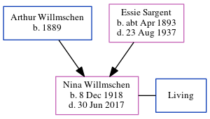

Nina Rose Barry (née Willmschen) 1918 - 2017
[ Home ] | [ Calendar ] | [ Surnames Index ] | [ Census Index ] | [ Family History ]The child of Arthur Willmschen and Essie Sargent, Nina Willmschen, the fourth cousin twice-removed on the mother's side of Nigel Horne, was born in Osceola, Polk, Nebraska, USA on Dec 8, 19181,2. She married Richard Barry in Vancouver, Clark, Washington, USA on Oct 15, 19381. On Apr 1, 1930, she was living on Maple Street, Wenatchee, Chelan, Washington3.
She died on Jun 30, 2017 in Oregon, USA2.
Parents
- Arthur was born in 1889
- Essie Elanora was born c. Apr 1893
Citations
- United States Marriages - Findmypast
- United States Obituary Notices - Findmypast
- US Census 1930 - Findmypast (was age 11 and the daughter of the head of the household)
Media
US Census 1930 - USC/1930/004955340/00877/031
United States Marriages - R_102929368233/2
United States Marriages - US/FS/M/079462214/2
United States Marriages - US/FS/M/093152546/2
United States Obituary Notices - US/TRIB/104965931
Family Tree
Generated by ged2site. Last updated on Jun 11, 2024